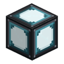

Реакторная колонна
alaindustrial:fuel_rod_assembly
Сводка
Реакторная колонна — то, во что реактор заряжают, и то, чем он охлаждается. Прозрачная стойка на четыре стержня стоит внутри реакторной комнаты, наполняется правым щелчком с ТВЭЛом в руке и пустой рукой опустошается. Меню у неё нет вовсе.
С этапа 3 у неё есть ещё два бака — вода и пар. Вода приходит трубой, кипит и уносит тепло; пар уходит трубой наружу. Уровень воды, как и число стержней, виден снаружи, на самой модели.
Это главное решение этапа 2 эпика: топливо не лежит в слоте, а стоит в комнате. Пустая стойка и полная различимы с другого конца зала, «долить топливо» — действие в мире, а не в окне, и наполовину разряженная активная зона видна одним взглядом, а не по числу в ГУИ.
Она хранит предметы, а не счётчик
До этапа 4 стойка держала число стержней и одно общее «сколько осталось в горящем». Из этого следовали ровно две вещи, с которыми игрок сталкивался в первый же час: начатый стержень при вытаскивании уничтожался (записать его остаток было некуда), а выгоревший исчезал — то есть каждая заправка стоила новой экранирующей пластины, а значит палладия.
Теперь стойка держит четыре предмета. Оба следствия исчезли вместе с их причиной:
| Что было | Что стало |
|---|---|
| Недогоревший стержень терялся | возвращается со своей прочностью и продолжает с того же места |
| Выгоревший исчезал | становится оболочкой ТВЭЛ и остаётся стоять в стойке |
| Один общий счётчик горения | у каждого стержня своя прочность (см. спеку стержня) |
Как ей пользоваться
| Действие | Что происходит |
|---|---|
| ПКМ со ТВЭЛом в руке | стержень встаёт в первое свободное гнездо, звук металла; в творческом режиме предмет не тратится |
| ПКМ с оболочкой ТВЭЛ в руке | то же самое: оболочку можно поставить в стойку про запас |
| ПКМ в полной стойке | ничего не берётся — предмет остаётся в руке |
| ПКМ пустой рукой | стойка отдаёт один стержень, отработавшие первыми |
| ПКМ любым другим предметом | падает в ту же ветку, что и пустая рука: стержень всё равно вынимается |
| Слом блока | выпадает всё содержимое, целое и недогоревшее |
Пятая строка не описка, а вынужденное решение: в 26.2 InteractionResult.PASS из не проваливается в, поэтому «вынуть стержень с киркой в руке» иначе молча ничего бы не делало. Возвращается TRY_WITH_EMPTY_HAND.
Отработавшие отдаются первыми
Это и есть весь смысл взаимодействия. Игрок подходит к выработавшейся колонне за оболочками, чтобы их заправить, и меньше всего хочет сначала выудить обратно те живые стержни, которые сам туда поставил десять минут назад. Порядок фиксирован: сначала пустые, и только когда их не осталось — заряженные, сверху вниз.
Дропом при сломе занимается, а не игровой хук слома: криппер, вскрывший стойку, — ровно тот случай, когда терять содержимое обиднее всего.
Износ идёт по всем заряженным стержням сразу
Контроллер списывает с колонны EU/FE, а колонна переводит их в деления прочности — у всех заряженных стержней одновременно, по одному делению на круг.
цена круга = 144 EU/FE × (сколько стержней с ураном)Пока накопленного расхода не хватает на целый круг, он переносится на следующий тик; как только хватает — каждый заряженный стержень получает +1 к повреждению. Стержень, добравший до 1000, тут же заменяется пустым прямо в гнезде.
Так сделано потому, что «по очереди» было просто неправдой: четыре стержня стоят в одном потоке нейтронов и все четыре дают энергию, а старела при этом одна штука. Игрок видел четыре работающих стержня и одну убывающую полосу. При этом арифметика не поехала: колонна по-прежнему тратит ровно один стержень энергии на стержень, просто берёт её из всех сразу.
Практическое следствие: колонна из четырёх стержней вырабатывается вся разом. Двадцать минут (в одиночной стойке) все четыре полны, потом все четыре одновременно становятся оболочками. Стойка, заправленная вразнобой, тоже выравнивается: свежий стержень доживает дольше полупустых соседей, потому что круг списывается со всех, а выбывшие из него выходят.
Топливо тратится только тогда, когда энергия нужна. Если буфер контроллера полон и никто не тянет, стойки не изнашиваются вовсе — тот же принцип, по которому зарядная станция тратит EU/FE за передачу, а не за тик.
Заполнение видно снаружи
Blockstate несёт два счётчика, а не один:
| Свойство | Что значит | Как рисуется |
|---|---|---|
rods = 0…4 | сколько стержней стоит всего, оболочки в том числе | занятые гнёзда |
fuelled = 0…4 | сколько из них с ураном | светлые стержни; остальные — тёмные оболочки |
Двух свойств мало не потому, что так красивее. С одним счётчиком, считавшим только топливо, выработавшаяся колонна сообщала ноль — и оболочки в ней становились не только невидимыми, но и недоступными: код взаимодействия читал блокстейт, решая, есть ли что вынимать. Такую стойку нельзя было ни опустошить, ни заправить, только сломать.
Блок-сущность считает своё содержимое сама и при каждом изменении приводит блокстейт к нему (syncRods), поэтому модель не может разойтись с тем, что внутри.
Стойки соединяются по вертикали
Два дополнительных булевых состояния — up и down — включаются, когда прямо над или под стойкой стоит такая же. У соединённых стоек пропадают крышка и донная плита, а стык закрывается вставкой, так что колонна из трёх сборок читается как одна высокая стойка, а не как три поставленных друг на друга ящика. Тот же приём, которым в моде срастаются кабель и труба.
Соединение не чисто косметическое: по нему же ходят жидкости (см. «Стопка — это один сосуд»). На выработку и нагрев оно не влияет — влияет соседство (см. Баланс), а его контроллер считает по всем трём осям независимо от того, как сборка выглядит.
Форма выделения следует за моделью: одинокая стойка 12×14×12, стыкованная сверху — 12×16×12. Иначе рамка выделения стыкованной сборки висела бы на два пикселя ниже видимой геометрии.
Состояния пересчитываются в, а не в: это тот самый ванильный хук, который вызывается и при обычной установке, и при мировых правках, и при постановке структуры.
Вода и пар
С этапа 3 у колонны два бака, и вместе они — половина охлаждающего контура реактора.
| Бак | Ёмкость | Что принимает | Что отдаёт наружу |
|---|---|---|---|
| Вода | 4000 мБ (4 ведра) | только воду | ничего |
| Пар | 4000 мБ | ничего | пар |
Баки нарочно зеркальны. Воду можно только залить: реакторная вода — не запас, из которого удобно одолжить. Разреши её выкачивать — и игрок ставил бы помпу на раскалённую зону и вытягивал теплоноситель обратно, то есть получал бы и бесплатный пар, и расплав по требованию. Пар, наоборот, можно только забрать: закачать его в колонну снаружи нельзя ничем.
Правило граней: пар только вверх, вода — всем остальным
| Грань | Что там опубликовано |
|---|---|
| Верх | бак пара |
| Все остальные пять | бак воды |
Так одна труба всегда однозначна: одна грань — одна жидкость, одно направление. И это правило переживает стыковку колонн по вертикали, чего не пережило бы «пар выходит из верха каждой колонны»: у нижних колонн в стопке свободного верха нет вовсе.
Труба, которая забирает пар, должна стоять над колонной и работать в режиме «извлечение»; труба, которая подаёт воду, — с любой другой стороны и в режиме «выдача».
Стопка — это один сосуд, а соседняя колонна — другой
Порт, который видит труба, отчитывается за всю вертикальную стопку, а не за один блок: суммарный объём, суммарная ёмкость, заливка снизу вверх, отбор пара сверху вниз. Каждый тик контроллер ещё и пересобирает содержимое стопки — вода оседает вниз, пар поднимается вверх.
Без этого двухблочная колонна попросту не наполнялась: вода уходит в нижний блок, тот первым доходит до потолка, и труба, спросившая «есть ли место?», получала «нет» от сосуда, заполненного наполовину, и останавливалась.
⚠️ Колонны, стоящие бок о бок, — разные сосуды. Раньше контроллер выравнивал баки по всей комнате, и одна труба поила весь зал. Это было удобно и неправдиво: теплоноситель, появляющийся внутри стойки, к которой ничего не подведено, читается как баг, как бы ни был полезен. Обвязывают те колонны, которые хотят охлаждать; проще всего — ставить их стопками и подводить трубу к одной клетке стопки.
Кипение
Колонна кипятит воду не сама — её кипятит контроллер, и только тогда, когда реактор перевалил за целевую точку контура (60 % шкалы). Ниже неё оболочка сбрасывает всё тепло сама, и контур не тратит ни капли: вода — это система безопасности, а не радиатор. Целевая точка намеренно ниже жёлтой зоны (= 70 %), поэтому исправный реактор на воде стоит на зелёном, а жёлтый снова означает «что-то не так».
Один миллибуккет воды уносит = 2 единицы тепла и превращается в 1 мБ пара — обмен один к одному по объёму.
Кипение упирается в два предела сразу: сколько в колонне воды и сколько в ней осталось места под пар. Поэтому забитый паром контур останавливает охлаждение так же надёжно, как пустой водяной бак, — вода на месте, шкала полная, а температура растёт. Это не баг, а единственная причина, по которой выхлоп (паровая насадка) обязателен.
Уровень воды виден снаружи
Blockstate несёт water = 0…4 — четверти бака, отдельная часть multipart-модели. Правило округления особое: всё, что больше нуля, показывает хотя бы одну четверть. Колонна, в которой остался глоток воды, не должна выглядеть так же, как сухая, — реакции на эти два состояния совершенно разные.
Она не тикает
У сборки есть блок-сущность, но своего тика у неё нет. Реактор — это одна машина, а не пол, заставленный машинами: контроллер ведёт все сборки своей комнаты из одного тика, поэтому зал с тридцатью стойками стоит серверу столько же, сколько один блок с сущностью, а не тридцать.
Разделение обязанностей: стойка — это состояние и правила его изменения (что стоит в гнёздах, сколько в стержнях осталось, что отдать при сломе), контроллер — расписание.
Практическое следствие, которое стоит знать: контроллер обходит комнату не каждый тик, а раз в = 40 тиков (2 с). Стержень, вставленный рукой, попадает в расчёт со следующего обхода — до двух секунд задержки, что незаметно рядом со стержнем, который горит минутами.
Пустая стойка из расчёта больше не выпадает. В список контроллера попадают все колонны, а не только заряженные: колонна — часть машины потому, что она стоит в комнате, а не потому, что кто-то успел её заправить. Раньше фильтр по топливу оставлял разряженную стойку без охлаждения и без участия в переливе, из-за чего вода, поданная в низ стопки, не поднималась выше первой заряженной колонны. Соседство при этом считается по топливу: две пустые стойки рядом ничего не разгоняют.
Как её жжёт реактор
| Шаг | Что делает контроллер |
|---|---|
| Раз в 2 с | обходит внутренность комнаты, собирает все колонны, суммирует заряженные стержни, считает пары соседства |
| Каждый тик выработки | делит выработку между колоннами пропорционально числу заряженных стержней в каждой |
| Внутри колонны | доля переводится в деления прочности и списывается со всех заряженных стержней разом |
| Каждый тик | пересобирает жидкости внутри каждой вертикальной стопки |
Остаток от деления достаётся первой колонне с топливом, а не отбрасывается: комната, у которой число стержней не делит выработку нацело, всё равно платит за каждый выработанный EU/FE.
Свойства блока
| Поле | Значение |
|---|---|
| Форма | стойка 12×14×12 (одинокая), 12×16×12 (состыкованная сверху) — не полный куб |
| Окклюзия | — корпус прозрачный, стержни внутри должны рисоваться |
| Прочность | 3.0 |
| Взрывоустойчивость | 6.0 |
| Инструмент | кирка |
| Звук | металл |
| Блокстейты | rods = 0…4, fuelled = 0…4, water = 0…4, up, down |
| BlockEntity | есть, без собственного тика |
| NBT | содержимое стойки как предметы, CarriedEu (недосписанный расход), Water, Steam (содержимое баков, мБ) |
Прочность стержней хранится в самих предметах, поэтому отдельного поля под неё в NBT стойки нет — и не может быть рассинхрона между «сколько осталось» и «что стоит». Из баков сохраняются только количества: каждый бак по построению держит ровно одну жидкость, и поле «а какую именно» могло бы только разойтись с кодом.
Прочность блока нарочно ниже, чем у оболочки (5.0 / 30.0): сборка живёт внутри защищённой комнаты, и собственной брони ей не нужно — вскрывать реактор всё равно приходится через стену.
Звук
Работающая активная зона гудит низко и ровно — петля, — и звучит она именно от стоек с топливом, а не от контроллера: реакторный зал слышен как объём, а не как панель на стене. Одновременно гудят не все колонны, а лишь несколько: иначе плотно забитый зал превратился бы в стену звука. Внутри комнаты гул слышен в полную силу, снаружи его приглушает оболочка, а через открытый шлюз он вырывается наружу. Остановленный реактор молчит — молчат и те стойки, в которых топливо осталось.
Рецепты
Крафт — ×2 за раз.
I G I I = железный слиток ×4
G S G G = реакторное стекло ×4
I G I S = экранирующая пластина ×1Рецепт сам описывает предмет: стеклянные стенки, чтобы видеть заправку, железный каркас и экранирующая пластина в сердцевине. Две штуки за крафт — стоек нужны десятки, и штучный рецепт превратил бы заправку зала в верстачную рутину.
Прогрессия
Тир: нет (энергии у блока нет вообще). Требует: реакторное стекло и экранирующую пластину — то есть палладий, а значит Ад. Открывает: работу контроллера реактора на выработку. Без единой заряженной сборки собранная комната остаётся диагностическим устройством.
Связанное
ТВЭЛ — то, что в неё вставляют. Оболочка ТВЭЛ — то, что она отдаёт обратно. Контроллер реактора — тот, кто её жжёт и считает соседство. Реакторный ввод — как вода попадает в комнату и как пар из неё выходит. Паровая насадка — куда девается пар, и почему без неё кипение встаёт. Пар — что появляется в верхнем баке колонны. Реакторное стекло — половина рецепта и та же идея «видно, что внутри». Реакторная обшивка — стены, внутри которых стойка стоит.
Крафт
Крафт на верстаке

▶
Реакторная колонна